<!DOCTYPE html><html lang="en"><head><meta charset="utf-8"><meta name="viewport" content="width=device-width,initial-scale=1,shrink-to-fit=no"><title>Human Brain Map</title><meta name="description" content="Where personalized medicine meets human brain mapping."><link href="../css/style.min.css" rel="stylesheet"><link href="https://fonts.googleapis.com/css?family=Catamaran:400,500" rel="stylesheet"><link rel="apple-touch-icon" sizes="180x180" href="../img/apple-touch-icon.png"><link rel="icon" type="image/png" sizes="32x32" href="../img/favicon-32x32.png"><link rel="icon" type="image/png" sizes="16x16" href="../img/favicon-16x16.png"><link rel="manifest" href="site.webmanifest"><link rel="mask-icon" href="./img/safari-pinned-tab.svg" color="#fa8072"><meta name="msapplication-TileColor" content="#b91d47"><meta name="theme-color" content="#13191c"></head></html><body class="team"><header class="header-wrapper container"><h1 class="site-logo"><a href="/">Human Brain Map</a></h1><nav class="site-links"><a href="/" class="site-link home-link">Explorer</a><a href="/team" class="site-link team-link">Our Team</a></nav></header><div class="team-wrapper"><div class="team-col team-col--1"></div><div class="team-col team-col--2"></div><div class="team-col team-col--3"></div><div class="team-member-wrapper"><div class="team-member"><div class="container">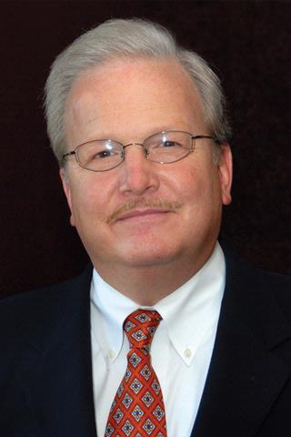<div class="team-member-info"><h2>Webster H. Pilcher, MD, PhD</h2><h3 class="team-member-title">Ernest &amp; Thelma Del Monte Distinguished Professor of Neuromedicine</h3><h3 class="team-member-title">Chairman of the Department of Neurosurgery, University of Rochester</h3><p class="team-member-bio">Dr. Pilcher’s clinical focus includes epilepsy surgery, brain tumors and general neurosurgery, with special emphasis on introaoperative awake mapping techniques to identify and protect critical language, sensory and motor functions. Dr. Pilcher is a graduate of Colgate University and the University of Rochester Medical School where he received his MD/PhD. Following neurosurgery training at the University of Rochester, he was awarded the Charles A. Ellsberg fellowship to study epilepsy and brain tumor surgery with George Ojemann, MD, at the University of Washington in Seattle. In 1990, Dr. Pilcher joined the faculty at the University of Rochester, and was appointed to Chairman in 2002. As Chairman, Dr. Pilcher grew a small clinical service consisting of 5 neurosurgeons into a nationally recognized academic and clinical enterprise. Rochester Neurosurgery Partners now provides care in all health systems in Rochester and 10 regional clinics.</p></div></div></div></div><div class="team-member-wrapper"><div class="team-member"><div class="container">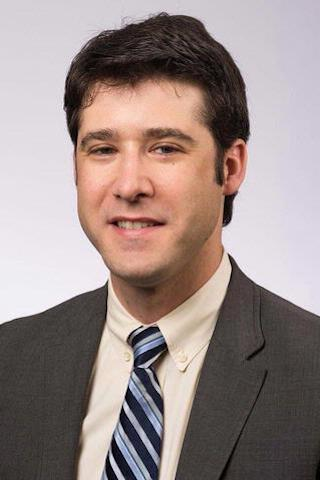<div class="team-member-info"><h2>Bradford Z. Mahon, PhD</h2><h3 class="team-member-title">Department of Neurosurgery, University of Rochester</h3><h3 class="team-member-title">Department of Psychology, Carnegie Mellon University</h3><p class="team-member-bio">Dr. Mahon is a cognitive neuroscientist who studies how the brain recovers from injury. His research seeks to optimize techniques to map cognitive, language, sensory and motor functions in the brain. He specializes in using functional and structural MRI to map critical functions in brain tumor patients prior to surgery. Dr. Mahon is a graduate of Harvard University (BS 2002, PhD 2009), and was on the faculty at the University of Rochester from 2011-2018. His current academic appointment is in the Department of Psychology at Carnegie Mellon University. He continues his work with the Translational Brain Mapping program and maintains a clinical research lab based at the Rochester Center for Brain Imaging, supported by funding from the National Science Foundation and the National Institute of Health.</p></div></div></div></div><div class="team-member-wrapper"><div class="team-member"><div class="container">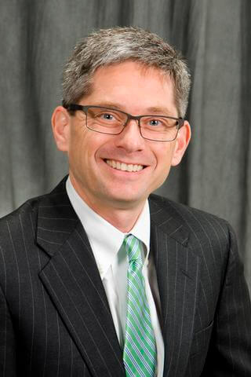<div class="team-member-info"><h2>Kevin Walter, MD</h2><h3 class="team-member-title">Associate Professor of Neurosurgery and Oncology at the University of Rochester Medical Center</h3><h3 class="team-member-title">Chief of Neurosurgery at UR Medicine's Highland Hospital</h3><p class="team-member-bio">Dr. Walter has special expertise in image guided neurosurgery, radiosurgery, and complex spinal surgery for tumors. He runs an active clinical research program that is involved in evaluating experimental therapeutics for patients with brain and spinal cancer. He is particularly interested in developing therapies that not only extend survival, but that also improve the quality of life for people afflicted with these diseases. Dr. Walter is a graduate of Williams College (BA, 1990) and Johns Hopkins University (MD, 1995). He completed his neurosurgical residency training at Johns Hopkins University and Hospital, where he also completed a National Cancer Institute sponsored fellowship in neuro-oncology. Following completion of residency training he served on the faculty at the University of Pittsburgh, where he was named director of adult neuro-oncology, and was recruited to the University of Rochester in 2007.</p></div></div></div></div><div class="team-member-wrapper"><div class="team-member"><div class="container">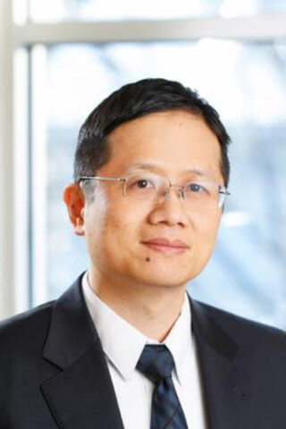<div class="team-member-info"><h2>Yan Michael Li, MD, PhD</h2><h3 class="team-member-title">Assistant Professor, Departments of Neurosurgery and Oncology</h3><p class="team-member-bio">Dr. Li specializes in the treatment of brain tumors and complex spine diseases. He is currently studying the maximal safe resection of brain and spine tumor, and cancer-specific targeted therapy for brain and spine tumors. Dr. Li received his medical degree from Peking Union Medical College and his PhD from University of Texas MD Anderson Cancer Center. He completed his neurosurgical residency and an enfolded complex spine fellowship at State University of New York, as well as fellowships at Dana Farber Cancer Center, Boston Children Hospital, Brigham and Women's Hospital Harvard Medical School, as well as the Neurosurgical Oncology fellowship at University of Texas MD Anderson Cancer Center.</p></div></div></div></div><div class="team-member-wrapper"><div class="team-member"><div class="container">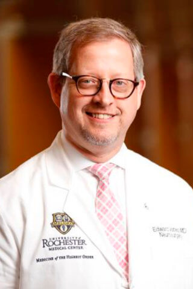<div class="team-member-info"><h2>George E. Vates, MD, PhD</h2><h3 class="team-member-title">Departments of Neurosurgery, Medicine</h3><p class="team-member-bio">Dr. Vates specializes in transsphenoidal pituitary surgery, skull base surgery, and management of subarachnoid aneurysms. Dr. Vates graduated summa cum laude from Duke University, and obtained his medical degree from Cornell University Medical College. During medical training, he obtained a PhD in neuroscience from the Rockefeller University. After medical school, Dr. Vates’s resident training he specialized techniques of transsphenoidal pituitary surgery. Dr. Vates then completed a fellowship in cerebrovascular and skull base surgery at the Brigham and Women's Hospital, Harvard Medical School, and joined the faculty at the University of Rochester in 2004. As the neurosurgeon co-director of the University of Rochester Multidisciplinary Neuroendocrinology Clinic, Dr. Vates has established the clinic as a regional referral center for patients with pituitary tumors.</p></div></div></div></div><div class="team-member-wrapper"><div class="team-member"><div class="container">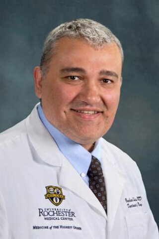<div class="team-member-info"><h2>Bogachan Sahin, MD, PhD</h2><h3 class="team-member-title">Assistant Professor, Department of Neurology</h3><h3 class="team-member-title">Chief of Neurology and Stroke Center Director at UR Medicine’s Highland Hospital</h3><h3 class="team-member-title">Director of the Vascular Neurology Fellowship Program, University of Rochester</h3><p class="team-member-bio">Dr. Sahin specializes in stroke in the young, cerebral vasculopathies, and hereditary stroke disorders. His research is focused on mechanisms of visual recovery in stroke survivors, occult atrial fibrillation as a cause of cryptogenic stroke, and carotid revascularization in asymptomatic carotid disease. Dr. Sahin majored in molecular biology as an undergraduate at Princeton University. He completed his M.D. and Ph.D. training at the University of Texas Southwestern Medical Center at Dallas, where he studied motor learning, synaptic plasticity, and post-synaptic signal transduction. After completing his neurology residency and stroke fellowship at Johns Hopkins University, he joined the faculty of the Department of Neurology at the University of Rochester Medical Center in 2013.</p></div></div></div></div><div class="team-member-wrapper"><div class="team-member"><div class="container">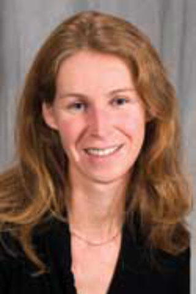<div class="team-member-info"><h2>Zoë Williams, MD</h2><h3 class="team-member-title">Associate Professor, Ophthalmology, Neurology and Neurosurgery</h3><p class="team-member-bio">Dr. Williams’ research involves using MRI and optical coherence tomography to study resilience to degeneration in a range of diseases that affect site, with emphasis on pituitary tumors and strokes that affect the early visual system. Dr. Williams obtained her undergraduate degree in Biology from Yale University, her Medical Degree at Wake Forest University School of Medicine, and completed her Residency in Ophthalmology at the University of Rochester. She then went on to complete a fellowship in Neuro-ophthalmology at the Wilmer Eye Institute, at Johns Hopkins University. She joined the faculty at Flaum Eye Institute at the University of Rochester Medical School in 2009.</p></div></div></div></div><div class="team-member-wrapper"><div class="team-member"><div class="container">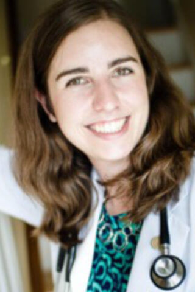<div class="team-member-info"><h2>Colleen Schneider</h2><h3 class="team-member-title">Medical Student Training Program (MD/PhD Program)</h3><h3 class="team-member-title">Brain and Cognitive Sciences, University of Rochester</h3><p class="team-member-bio">Colleen Schneider is a PhD student whose research seeks to understand the neural mechanisms through which vision recovers after stroke.</p></div></div></div></div><div class="team-member-wrapper"><div class="team-member"><div class="container">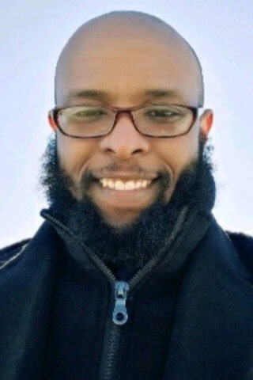<div class="team-member-info"><h2>Adnan Hirad, PhD</h2><h3 class="team-member-title">Translational Biomedical Science Program</h3><h3 class="team-member-title">Medical Student Training Program (MD/PhD Program)</h3><p class="team-member-bio">Dr. Hirad’s research seeks to understand how subconcussive and concussive traumatic head injuries affect the brain. His work focuses on developing novel MRI-based assays of neurotrama associated with closed head injury.</p></div></div></div></div><div class="team-member-wrapper"><div class="team-member"><div class="container">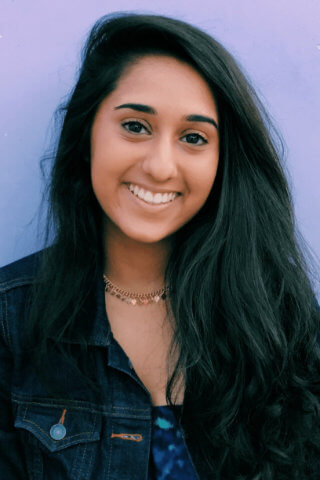<div class="team-member-info"><h2>Gauri Patil</h2><h3 class="team-member-title">Brain and Cognitive Sciences, University of Rochester</h3><p class="team-member-bio">Gauri Patil is an undergraduate student (BS, expected 2019) majoring in Brain and Cognitive Sciences. She is pre-admitted to the University of Rochester Medical School through the Rochester Early Medical Scholar’s program.</p></div></div></div></div><div class="team-member-wrapper"><div class="team-member"><div class="container">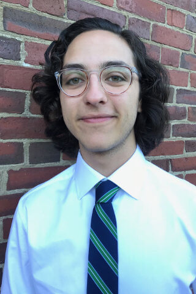<div class="team-member-info"><h2>Sam Haber, BS</h2><h3 class="team-member-title">Clinical Research Coordinator, Department of Neurosurgery</h3><p class="team-member-bio">Sam Haber completed his BS in Brain and Cognitive Sciences at the University of Rochester (2018) and currently runs pre- and post-operative evaluations of brain tumor patients. He also assists in the operating room with cognitive testing during awake craniotomies to map critical language, sensory and motor functions.</p></div></div></div></div><div class="team-member-wrapper"><div class="team-member"><div class="container">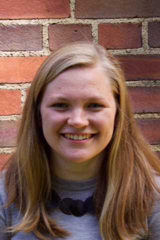<div class="team-member-info"><h2>Emily Prentiss, BS</h2><h3 class="team-member-title">Clinical Research Coordinator, Department of Neurosurgery</h3><p class="team-member-bio">Emily Prentiss completed her BS in Brain and Cognitive Sciences at the University of Rochester (2016) and worked for two years as a laboratory technician with Drs. Mahon, Sahin and Williams before joining the Department of Neurology as a full time Clinical Research Coordinator.</p></div></div></div></div></div><footer class="footer-wrapper"><div class="container"><small>&copy;2018 Brad Mahon &bull; <a href="">License</a></small></div></footer><script src="../js/colcade.min.js"></script><script>var colc=new Colcade(".team-wrapper",{columns:".team-col",items:".team-member-wrapper"})</script></body>